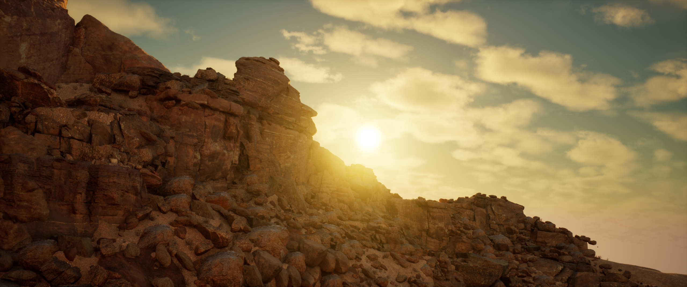

Building a Utah canyon in Unreal Engine 5
The canyon environment uses Megascans photogrammetry assets — high-resolution rock formations, cliff faces, and desert ground scatter — assembled into a believable canyon valley. The goal was for the geometry to feel like it had always been there: no obvious tiling, no floating rocks, a sense of geological weight.
Lumen global illumination handles the bounce light that wraps into the canyon walls from the sun angle. As the virtual sun nears the horizon during golden hour, Lumen re-solves the GI in real time, pulling the canyon into deep amber shadow on one side while the lit face burns orange. No baking, no lightmaps — the lighting reacts as the camera moves through the environment.

Golden hour — Lumen GI pulling warm light deep into the canyon walls

Blue hour — sun below the horizon, cool skylight fills the scene